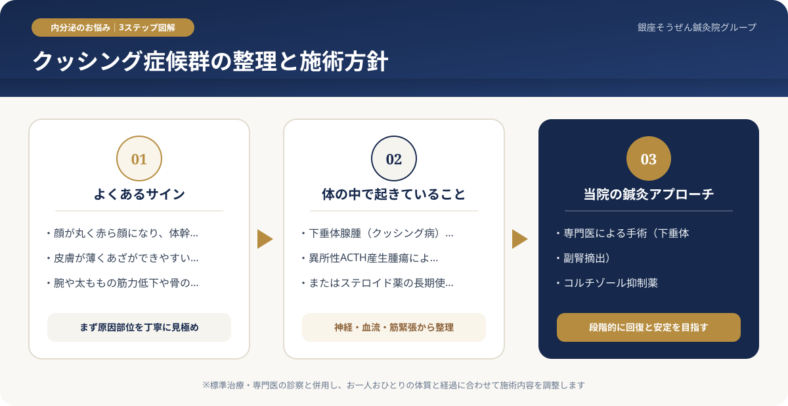

クッシング症候群の鍼灸
コルチゾール過剰により中心性肥満や満月様顔貌、高血圧等を呈する内分泌疾患。専門医の治療を最優先に安定期のみ補完ケアを行います。
まず知っておきたい要点と改善の流れ

下垂体腺腫（クッシング病）や副腎腫瘍・異所性ACTH産生腫瘍による内因性のコルチゾール過剰分泌、またはステロイド薬の長期使用による外因性要因で発症する内分泌疾患です。中心性肥満、満月様顔貌、皮膚菲薄化、筋力低下、骨粗鬆症、高血圧、糖尿病、易感染性、抑うつなど全身に重篤な代謝・循環異常を引き起こします。
このようなお悩みはありませんか？
- ✓顔が丸く赤ら顔になり、体幹に脂肪が集中してきた
- ✓皮膚が薄くあざができやすい、紫色の線状痕がある
- ✓腕や太ももの筋力低下や骨の弱さ・疲労感がある
- ✓高血圧や高血糖、気分の変動や不眠が続いている
当院の施術アプローチ・改善の流れ
なぜ鍼灸で改善へ向かうのか？（作用機序の図解）
クッシング症候群に対する鍼灸は、神経-内分泌-免疫ネットワークと末梢循環の調整機序を通じて、お体本来の回復力を引き出します。

内科専門医の薬物・食事管理を前提に、足三里・三陰交・背部経穴へ安全にアプローチします。
ストレス由来の交感神経過緊張を鎮め、ホルモン分泌や血糖・尿酸管理を乱す疲労要因を軽減します。
手足や内臓の血流を促し、合併しやすいしびれ・胃もたれ・倦怠感・関節痛の負担を和らげます。
皮膚衛生や低刺激を徹底し、日々の生活習慣改善を続けやすい安定した体調づくりを支えます。
院長YouTube解説・関連動画
クッシング症候群では、特徴的な身体的所見が見られる
クッシング症候群では、特徴的な身体的所見が見られます。これには、コルチコレステロイドが関係しています。
コルチコステロイドは体脂肪の量と分布を変えます。そのため、クッシング症候群では、体幹の周りに過剰に脂肪がつくようになります。特に背中の上部に脂肪が目立つようになります。
顔は丸く膨らみます。腕と脚は体幹と比べて細く、筋肉が衰えて力が弱くなります。皮膚は薄くなって、あざができやすくなります。さらに、クッシング症候群では、疲れやすくなるなどの症状もあります。
長い期間、コルチコステロイド値が高い状態が続くと、血圧が高くなり、骨が弱くなります。感染症に対しての抵抗力も弱くなります。
腎結石や糖尿病の危険が高まったり、幻覚が見えたり、うつ病などの精神障害が起こったりすることもあります。女性の場合は、月経周期が不規則になります。
クッシング症候群の小児は成長が遅くなります。そのため、身長があまり伸びずに低いままになります。
体型と外見の変化
・中心性肥満
腹部に脂肪が集中し、腕や脚は比較的細いままになることが多いです。
・満月様顔貌
顔が丸くなり、赤ら顔（顔面紅潮）が特徴的です。
・水牛様肩
首の後ろや肩に脂肪が集まり、こぶのようになることがあります。
・皮膚の変化
皮膚が薄くなり、容易にあざができやすくなります。
腹部、大腿部、臀部、乳房などに紫色のストレッチマーク（線状痕）が見られることがあります。
筋肉と骨の症状
・筋力低下
特に大腿部や上腕部の筋力が低下し、歩行や物を持つのが困難になることがあります。
・骨粗鬆症
骨密度の低下により骨折しやすくなります。特に背骨や肋骨、手首などが影響を受けやすいです。
・代謝と内分泌の症状
・高血圧
コルチゾールの影響で血圧が上昇します。
・高血糖
糖尿病に似た症状が現れ、血糖値が高くなることがあります。
・高脂血症
血中の脂質レベルが上昇し、心血管リスクが高まります。
精神的および神経系の症状
・気分の変動
抑うつ、不安、易怒性、パニック発作などが見られることがあります。
・記憶力低下
注意力や記憶力の低下が起こることがあります。
生殖系の症状
・女性の場合
生理不順や無月経、多毛症（顔や体の異常な毛の増加）などが見られます。
・男性の場合
勃起不全や性欲低下が見られることがあります。
その他の症状
・免疫抑制
感染症に対する抵抗力が低下し、感染症にかかりやすくなります。
・傷の改善の遅さ
外傷や手術後の傷の改善が遅くなることがあります。
クッシング症候群の改善方法は、食事の見直しと薬、手術や放射線です。食事は、タンパク質とカリウムを多く含む食事をすることが大切です。薬は、コルチゾールの値を下げたりコルチゾールの効果を阻害したりする薬を使って改善を行います。
クッシング症候群の改善方法は、原因がどこにあるかによって異なります。原因がある部位が副腎か、下垂体か、それ以外のどこにあるのかに合わせて改善を行うのです。
まず初めに行う改善方法は食事の見直しです。全身の状態を保つために、タンパク質とカリウムを多く含む食事をするのです。場合によっては、カリウムや血糖値を下げるための薬が必要になることもあります。
下垂体に腫瘍がある場合は、手術や放射線で改善を行います。副腎に腫瘍がある場合も手術で取り除きます。手術をしても効果が見られない場合や腫瘍がない場合は、両方の副腎を取り出すことが必要な場合もあります。
下垂体や副腎以外の腫瘍によってホルモンが過剰に分泌されている場合も手術で改善を行います。手術をするまでの間には、コルチゾールの値を下げるメチラポンやケトコナゾールなどの薬が使われます。
場合によってはカベルゴリンも効果的なこともあります。副腎皮質刺激ホルモンの機能を下げるために、パシレオチドとカベルゴリンを使って改善を行うこともあります。
内因性のクッシング症候群
下垂体腺腫の摘出: クッシング病（下垂体腺腫によるもの）では、経鼻的下垂体腺腫摘出術（経鼻経蝶形骨手術）が一般的です。
副腎腺腫または癌の摘出: 副腎に腫瘍がある場合、副腎摘出術が行われます。片側の副腎に腫瘍がある場合はその側のみ摘出されます。
・放射線
下垂体腺腫が完全に摘出できない場合や再発した場合に放射線が用いられることがあります。
手術や放射線が適さない場合などに用いられます。コルチゾールの産生を抑制する薬物が使用されます。具体的には、ケトコナゾール、ミトタン、メトピロンなどが含まれます。
・副腎切除後のホルモン補充
副腎が摘出された場合、コルチゾールや他のホルモンの補充が必要となります。
外因性のクッシング症候群
・ステロイド薬の減量または中止
ステロイド薬の使用を徐々に減量し、可能であれば中止します。ただし、急に中止すると副腎不全を引き起こす可能性があるため、医師の指導の下で慎重に行う必要があります。
・ライフスタイルの改善
クッシング症候群の症状を和らげるための補助的な方法として、ライフスタイルの改善も重要です。
バランスの取れた食事を心がけ、高血糖や高血圧、骨粗鬆症のリスクを減らすために適切な栄養素を摂取します。
筋力を維持し、肥満を防ぐために、適度な運動を行います。運動は精神的な健康にも良い影響を与えます。
・ストレス管理
ストレスを軽減するための方法を見つけ、リラクゼーションやストレス管理のテクニックを取り入れます。
・禁煙・節酒
喫煙や過度の飲酒は健康に悪影響を与えるため、禁煙し、アルコールの摂取を制限します。
プレドニゾロンなどのコルチコステロイドをたくさん使っている人は、副腎の機能が抑制されることがあります。これはたくさんのコルチコステロイドの作用で、視床下部と下垂体のホルモン分泌を妨げられるからです。
視床下部と下垂体のホルモン分泌が妨げられた状態のまま、急にコルチコステロイドの使用を止めると、副腎機能を急に回復することができず一時的に副腎機能不全になります。
ストレスを受けた時にも必要なコルチコステロイドをつくるための刺激ができなくなるのです。
そのため、コルチコステロイドを2～3週間以上使っている時は、急に止めてはいけません。少しずつ量を減らしていくことが大切です。
コルチコステロイドを使っている時も、病気や大きなストレスなど、場合によっては量を増やすことが必要になることもあります。
コルチコステロイドは、副腎皮質から分泌されるホルモンで、体内の多くの生理機能に関与しています。これには、炎症反応の調節、免疫機能の抑制、糖代謝の調節などが含まれます。天然のコルチゾールに加え、医学的に合成されたコルチコステロイド（プレドニゾロン、デキサメタゾンなど）も多くの疾患の改善に使用されます。
内分泌・糖尿病・甲状腺・代謝の全身ツボ図解
実際の施術ではお一人おひとりの体質・症状に合わせて選穴しますが、糖尿病合併症・甲状腺機能異常・メタボリック・代謝異常の併用サポートの臨床でよく用いられる代表的なツボの目安です。

📌 代表的なツボの詳細一覧表を開く（6穴） ▼
| ツボ名 | 位置の目安 | 主な狙い | セルフケアの注意点 |
|---|---|---|---|
| 脾兪（ひゆ） | 背中の中央やや下、背骨の外側 | 糖代謝・消化吸収・食後のだるさサポート | 糖尿病・甲状腺疾患は必ず内分泌内科の標準治療を最優先します。 |
| 腎兪（じんゆ） | 腰のくびれの高さ、背骨の外側 | 内分泌系・倦怠感・冷えとむくみの土台づくり | 糖尿病神経障害がある場合は火傷防止のため強い熱刺激を避けます。 |
| 中脘（ちゅうかん） | みぞおちとおへその中間 | 胃腸機能・糖尿病性胃不全麻痺の自律神経サポート | 食後すぐの強圧迫は避け穏やかに整えます。 |
| 関元（かんげん） | おへそから指4本分下 | 基礎代謝・下腹部の巡りと疲労回復補助 | 低血糖症状（冷や汗・震え）があるときは直ちに補食してください。 |
| 足三里（あしさんり） | 膝の下外側、指4本分下 | 下肢の末梢循環・神経障害予防の全身調整 | 足先に傷や潰瘍がある場合は絶対に患部へ施術しません。 |
| 三陰交（さんいんこう） | 内くるぶしの上から指4本分上 | ホルモン・代謝・睡眠と末梢血流の調和 | 厳格な衛生管理と低刺激で安全に継続します。 |
国際査読論文の科学的エビデンス
国際的な医学データベース（PubMed・Cochrane等）で報告されている糖尿病合併症・甲状腺機能異常・メタボリック・代謝異常の併用サポート領域の代表的な査読済み鍼灸研究をまとめています（標準治療との併用や研究上の限界を含めて正確に掲載）。
📚 査読論文データ・PubMed出典リンクを開く（4件） ▼
| 年・研究デザイン | 対象・規模 | 主な結果 | 限界・出典 |
|---|---|---|---|
| 2026年 メタ解析 | 2型糖尿病 20 RCTs（n=1,479） | 空腹時血糖（SMD -0.52, p=0.009）、HbA1c（SMD -0.76, p=0.002）、HOMA-IR（p<0.0001）を有意低減。 | 将来研究のばらつき懸念。食事・運動・薬物療法の継続必須。 Postgrad Med J (PMID: 41052150) |
| 2025年 メタ解析 | 糖尿病性末梢神経障害（DPN）14 RCTs（n=1,169） | 偽鍼比でVAS疼痛-1.44cm、神経症状スコアTCSSも有意改善（WMD -1.22）。 | GRADE確実性は低い。足部の熱傷・感染予防に細心の注意。 Curr Pain Headache Rep (PMID: 40220243) |
| 2024年 メタ解析 | 橋本病（慢性甲状腺炎）14 RCTs（n=1,020） | レボチロキシン単独比でTPOAb・TGAb低下およびTSH・FT3・FT4の調整を示唆（p<0.00001）。 | 中国国内RCT中心・盲検化不足。甲状腺薬の自己中断は厳禁。 Medicine (PMID: 38428856) |
| 2024年 メタ解析 | 単純性肥満 25 RCTs（n=2,018・生活習慣併用） | 生活習慣単独比で体重-4.73・BMI -2.11・腹囲-4.96（p<0.00001）、中性脂肪・LDLも有意改善。 | 介入期間・方法の異質性高、長期リバウンド防止は要検証。 Diabetes Metab Syndr Obes (PMID: 39582784) |
参考文献・出典
- 2026年 メタ解析（2型糖尿病 20 RCTs（n=1,479））— Postgrad Med J (PMID: 41052150)
- 2025年 メタ解析（糖尿病性末梢神経障害（DPN）14 RCTs（n=1,169））— Curr Pain Headache Rep (PMID: 40220243)
- 2024年 メタ解析（橋本病（慢性甲状腺炎）14 RCTs（n=1,020））— Medicine (PMID: 38428856)
- 2024年 メタ解析（単純性肥満 25 RCTs（n=2,018・生活習慣併用））— Diabetes Metab Syndr Obes (PMID: 39582784)
よくある質問（FAQ）
Q. ステロイド薬によるクッシング症候群ですが、薬を減らしてよいですか？▼
Q. 治療後の体調回復やストレスケアに鍼灸は使えますか？▼
あわせて読まれる関連疾患（内分泌のお悩み）
異常蛋白質アミロイドが心臓・腎臓・神経等の臓器に沈着する指定難病群。専門医の病型別標準治療を最優先し、安定期の許可下のみ穏やかにケアします。
遺伝子変異により全身に繰り返す炎症を起こす希少難病群です。専門医治療を最優先に、安定期の冷え対策や穏やかな自律神経ケアを支えます。
副腎や性腺のステロイドホルモン合成が障害される先天性疾患です。副腎クリーゼ予防とホルモン補充を最優先に、安定期の穏やかなケアを支えます。
関節リウマチに全身の血管炎や臓器症状を伴う指定難病。専門医の免疫抑制療法を最優先とし、急性期は対象外・安定期の許可下のみ穏やかにケアします。
肺動脈に血栓が詰まり肺動脈圧が上昇する指定難病。専門医の抗凝固療法・手術等を最優先とし、安定期の許可下でのみ穏やかにケアします。
ACTHへの副腎の反応が障害されコルチゾールが不足する先天性指定難病。生涯のホルモン補充と副腎クリーゼ予防を最優先に安定期を支えます。
CLINICAL RECOVERY CASES
✨ 実際の臨床改善事例・回復経過を見る
銀座本院をはじめ各院での実際の改善事例を症状別に絞り込んでご確認いただけます。
おひとりで悩まず、まずはご相談ください
銀座本院・川口・大宮・横浜・博多・田無の各院でご予約を承っております。